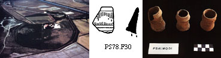

Williams College Excavations at Psalmodi, France
©1996-2008 Psalmodi Foundation for Archaeological Research. All Rights Reserved.
Last updated 1/December/2016
From 1970 to 1989 Williams College sponsored excavations and study at the abandoned Benedictine Monastery of Saints Peter and Paul at Psalmodi (CAG 30/3:276[2*]) in Eastern Languedoc, France. This work was directed by Whitney Stoddard, Brooks Stoddard and Bailey Young. Since 1993 a team led by Brooks Stoddard, Sebastian Heath and David Yoon has been studying the on-site structures and the material in the project museum. Funding has been provided by Williams College, the Samuel H. Kress Foundation and private donors. At this time it is not possible for the public to visit the site.
The Psalmodi excavations have been greatly facilitated by the site's owners and their families whose support and cooperation have been crucial. Similarly we have benefitted significantly from the encouragement and expertise of our French colleagues: the late Robert St.-Jean, Guy Barruol, Danièle Foy, Victor Lassalle, Christophe Pellecuer, Claude Raynaud, Jean-François Reynaud, Marie Leenhardt, Lucy Vallauri and many others.
The Site
The buildings of the former monastery occupied the northern end of a now land-locked island. Surface collection in 1994 did not identify any pre-modern use of the southern part of the island.
Architectural and Sculptural Studies
The majority of the scuplture at Psalmodi came from the Carolingian, Romanesque and Gothic structures of the monastic complex. Much of it, including some of the finest Romanesque and Gothic pieces, was found reused as spolia in later walls and foundations. There is also a small number of Early Christian pieces but they are probably to be associated with medieval reuse of earlier sarcophagi.
Ceramic Studies
The ceramic assemblage at Psalmodi includes a small number of sherds from the Bronze Age, Iron Age, and Early Roman periods. There is a large amount of Late Roman material as well as an excellent collection of Medieval and Early Modern wares. While most of the pottery at Psalmodi is local, imports are well represented in the Late Ancient and Late Medieval periods, including African Red Slip ware, Phocaean ware, African and Eastern amphoras, Aegean and Palestinian cookwares, Valencian lusterware, Catalan maiolica arcaica, Ligurian graffita arcaica, and Pisan graffita a stecca.
The pottery listed here has been studied by Sebastian Heath and David Yoon. The drawings are by Rosemary Robertson, Megan Farkas, and David Yoon.
Previous and Related Publications
The largest collection of primary documents relevant to the study of Psalmodi is collected in the Archives Départmental du Gard, Nîmes, H106-H183. A list of secondary sources follows:
Appendices
{kind=link}
{kind=link}
{kind=link}